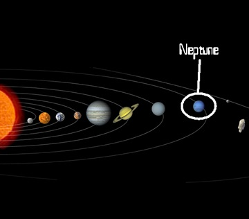

Нептун — осма планета во Сончевиот систем. Неа ја открил германскиот астроном Јохан Готфрид Гале во 1846 година. Освен овие податоци за Нептун не се знаело многу сè додека вселенската сонда „Војаџер 2“ не го посетила во 1989 година. Оваа светла сина топка речиси нема никакви површинси обележја. Во време кога ја фотографирал „Војаџер 2“, серија бури познати под името Големата темна дамка (која подоцна исчезнала) можела да се види како брзо се движи во насока спротивна на ротацијата на планетата. Нептун има свои прстени како и другите гасовити џинови. Постојат четири скоро невидливи прстени составени од темни парчиња мраз. Таа е четвртата најголема планета по дијаметар и трета по маса; Нептун има 17 пати поголема маса од Земјата и е нешто помасивен од блискиот Уран, кој има маса од 14 Земјини маси, но е нешто помал поради поголемата густина. Планетата е именувана по Нептун, римскиот бог на морето. Неговиот астрономски симбол (♆, Уникод U+2646) е стилизирана верзија од Посејдоновиот Трозабец. Најмногу се разликува по тоа што има елиптична орбита.

На големи височини атмосферата на Нептун е 80% водород и 19% хелиум и мал дел на метан. Атмосферата е поделена на 2 региони: пониска тропосфера, каде температурата се намалува со височина и стратосфера, каде температурата расте со височина. Границата меѓу двете, се нарекува тропопауза. Понатаму продолжува термосферата со притисоци околу 1 до 10Pa. Поради неразјаснети причини термосферата на планетата е на 750K. Планетата е премногу оддалечена од сонцето за ова да биде предизвикано од ултравиолетови зраци. Едно можно објаснување е атмосферска интеракција со јони во могнетното поле на планетата.
Просечната оддалеченост на Нептун од Сонцето е 4,5 милијарди km (30,1 астрономски единици), и едно заобиколување на сонцето трае 164,79 години. Елиптичната орбита на Нептун е навалена за 1,77 степени во однос на Земјата. Наваленоста на оската на ротација изнесува 28,32 степени, што е приближна со таа на Земјата(23) и Марс(25). Како резултат планетата има слични сезони. Поради долгиот орбитален период секоја сезона трае 40 години.
Времето на Нептун е карактеристично по тоа што има екстремно динамички системи на бури, со ветрови кои достигнуваат 2200km/h. На врвовите на облаците најчесто ветровите се помеѓу 400m/s(на екваторот) и 250m/s(на половите). Времето на Нептун се разликува толку многу од Уран воглавно поради поголемото внатрешно загревање. Иако Нептун е 50% подалеку од Сонцето одколку Уран и добива околу 40% од сончевата светлина што ја добива Уран, температурите на планетите се пориближно еднакви. Слично како Уран, причината за ова греење не е позната, но тука е сигурно поизразена. Уран зрачи 1.1 пати енергијата што ја добива од Сонцето, додека Нептун околу 2,61 пати. Ова е причината зошто иако е најоддалечен гасовит џин од Сонцето, внатрешната енергија дозволува тука да се создадат најсилните ветрови во целиот Сончев Систем.
Дознај повеќе за Нептун
| Апхел |
30.33 AЕ (4,540 Gm) |
| Перихел |
29.81 AЕ (4,460 Gm) |
| Голема полуоска |
30.110387 AЕ (4,504.45 Gm) |
| Орбитален период |
16.11 h |
| Ѕвезден период |
164.8 г 60,182 д |
| Просечна орбитална брзина |
5.43 km/s |
| Познати сателити |
14 |